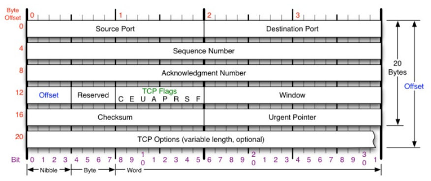
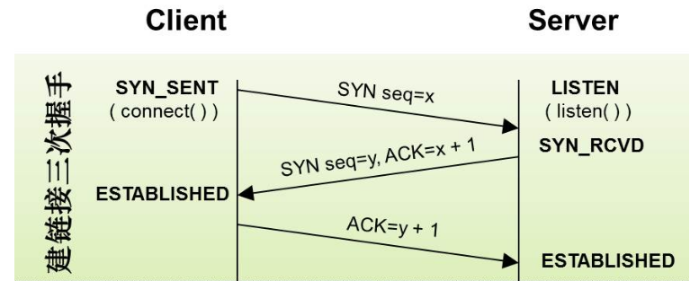
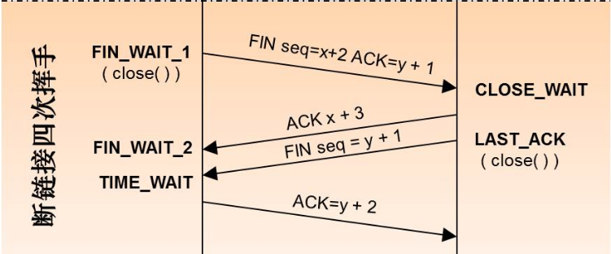

<!DOCTYPE html>
<html lang="zh">
<head><meta name="generator" content="Hexo 3.8.0">
    <meta charset="utf-8">
    
    <title>计算机网络 | FEI&#39;s Blog</title>
    
    
        <meta name="keywords" content="网络">
    
    <meta name="viewport" content="width=device-width, initial-scale=1, maximum-scale=1">
    <meta name="description" content="网络分层
 OSI七层模型：
 
 
 
 OSI层
 功能
 协议
 
 
 
 
 应用层
 文件传输、电子邮件、文件服务、虚拟终端
 TFTP、HTTP、SNMP、FTP、SMTP、DNS、Telnet
 
 
 表示层
 数据格式化、代码转换、数据加密
 没有协议
 
 
 会话层
 解除或建立与别的接点的联系
 没有协议
 
 
 传输层
 提供端对端的接口
 TCP、UDP">
<meta name="keywords" content="网络">
<meta property="og:type" content="article">
<meta property="og:title" content="计算机网络">
<meta property="og:url" content="http://ff120.github.io/hexoblog/2017/07/12/技术/计算机基础/计算机网络/计算机网络/index.html">
<meta property="og:site_name" content="FEI&#39;s Blog">
<meta property="og:description" content="网络分层
 OSI七层模型：
 
 
 
 OSI层
 功能
 协议
 
 
 
 
 应用层
 文件传输、电子邮件、文件服务、虚拟终端
 TFTP、HTTP、SNMP、FTP、SMTP、DNS、Telnet
 
 
 表示层
 数据格式化、代码转换、数据加密
 没有协议
 
 
 会话层
 解除或建立与别的接点的联系
 没有协议
 
 
 传输层
 提供端对端的接口
 TCP、UDP">
<meta property="og:locale" content="zh-Hans">
<meta property="og:image" content="http://ff120.github.io/hexoblog/2017/07/12/技术/计算机基础/计算机网络/计算机网络/2017-10-06_102204.png">
<meta property="og:image" content="http://ff120.github.io/hexoblog/2017/07/12/技术/计算机基础/计算机网络/计算机网络/2017-10-06_102640.png">
<meta property="og:image" content="http://ff120.github.io/hexoblog/2017/07/12/技术/计算机基础/计算机网络/计算机网络/2017-10-06_104237.png">
<meta property="og:image" content="http://ff120.github.io/hexoblog/2017/07/12/技术/计算机基础/计算机网络/计算机网络/QQ截图20171006173539.png">
<meta property="og:updated_time" content="2019-03-28T00:54:59.365Z">
<meta name="twitter:card" content="summary">
<meta name="twitter:title" content="计算机网络">
<meta name="twitter:description" content="网络分层
 OSI七层模型：
 
 
 
 OSI层
 功能
 协议
 
 
 
 
 应用层
 文件传输、电子邮件、文件服务、虚拟终端
 TFTP、HTTP、SNMP、FTP、SMTP、DNS、Telnet
 
 
 表示层
 数据格式化、代码转换、数据加密
 没有协议
 
 
 会话层
 解除或建立与别的接点的联系
 没有协议
 
 
 传输层
 提供端对端的接口
 TCP、UDP">
<meta name="twitter:image" content="http://ff120.github.io/hexoblog/2017/07/12/技术/计算机基础/计算机网络/计算机网络/2017-10-06_102204.png">
    

    
        <link rel="alternate" href="/atom.xml" title="FEI&#39;s Blog" type="application/atom+xml">
    

    
        <link rel="icon" href="/hexoblog/favicon.ico">
    

    <link rel="stylesheet" href="/hexoblog/libs/font-awesome/css/font-awesome.min.css">
    <link rel="stylesheet" href="/hexoblog/libs/open-sans/styles.css">
    <link rel="stylesheet" href="/hexoblog/libs/source-code-pro/styles.css">

    <link rel="stylesheet" href="/hexoblog/css/style.css">
    <script src="/hexoblog/libs/jquery/2.1.3/jquery.min.js"></script>
    <script src="/hexoblog/libs/jquery/plugins/cookie/1.4.1/jquery.cookie.js"></script>
    
    
        <link rel="stylesheet" href="/hexoblog/libs/lightgallery/css/lightgallery.min.css">
    
    
        <link rel="stylesheet" href="/hexoblog/libs/justified-gallery/justifiedGallery.min.css">
    
    
    
    


    
        <script async src="//busuanzi.ibruce.info/busuanzi/2.3/busuanzi.pure.mini.js"></script>
    
</head>
</html>
<body>
    <div id="container">
        <header id="header">
    <div id="header-main" class="header-inner">
        <div class="outer">
            <a href="/hexoblog/" id="logo">
                <i class="logo"></i>
                <span class="site-title">FEI&#39;s Blog</span>
            </a>
            <nav id="main-nav">
                
                    <a class="main-nav-link" href="/hexoblog/">首页</a>
                
                    <a class="main-nav-link" href="/hexoblog/archives">归档</a>
                
                    <a class="main-nav-link" href="/hexoblog/categories">分类</a>
                
                    <a class="main-nav-link" href="/hexoblog/tags">标签</a>
                
                    <a class="main-nav-link" href="/hexoblog/about">关于</a>
                
            </nav>
            
            <div id="search-form-wrap">

    <form class="search-form">
        <input type="text" class="ins-search-input search-form-input" placeholder="Rechercher">
        <button type="submit" class="search-form-submit"></button>
    </form>
    <div class="ins-search">
    <div class="ins-search-mask"></div>
    <div class="ins-search-container">
        <div class="ins-input-wrapper">
            <input type="text" class="ins-search-input" placeholder="Type something...">
            <span class="ins-close ins-selectable"><i class="fa fa-times-circle"></i></span>
        </div>
        <div class="ins-section-wrapper">
            <div class="ins-section-container"></div>
        </div>
    </div>
</div>
<script>
(function (window) {
    var INSIGHT_CONFIG = {
        TRANSLATION: {
            POSTS: 'Articles',
            PAGES: 'Pages',
            CATEGORIES: 'Catégories',
            TAGS: 'Tags',
            UNTITLED: '(Untitled)',
        },
        ROOT_URL: '/hexoblog/',
        CONTENT_URL: '/hexoblog/content.json',
    };
    window.INSIGHT_CONFIG = INSIGHT_CONFIG;
})(window);
</script>
<script src="/hexoblog/js/insight.js"></script>

</div>
        </div>
    </div>
    <div id="main-nav-mobile" class="header-sub header-inner">
        <table class="menu outer">
            <tr>
                
                    <td><a class="main-nav-link" href="/hexoblog/">首页</a></td>
                
                    <td><a class="main-nav-link" href="/hexoblog/archives">归档</a></td>
                
                    <td><a class="main-nav-link" href="/hexoblog/categories">分类</a></td>
                
                    <td><a class="main-nav-link" href="/hexoblog/tags">标签</a></td>
                
                    <td><a class="main-nav-link" href="/hexoblog/about">关于</a></td>
                
                <td>
                    
    <div class="search-form">
        <input type="text" class="ins-search-input search-form-input" placeholder="Rechercher">
    </div>

                </td>
            </tr>
        </table>
    </div>
</header>

        <div class="outer">
            
            
                <aside id="sidebar">
   
        
    <div class="widget-wrap" id="categories">
        <h3 class="widget-title">
            <span>Catégories</span>
            &nbsp;
            <a id="allExpand" href="#">
                <i class="fa fa-angle-double-down fa-2x"></i>
            </a>
        </h3>
        
        
        
         <ul class="unstyled" id="tree"> 
                    <li class="directory">
                        <a href="#" data-role="directory">
                            <i class="fa fa-folder"></i>
                            &nbsp;
                            心理学
                        </a>
                         <ul class="unstyled" id="tree"> 
                    <li class="directory">
                        <a href="#" data-role="directory">
                            <i class="fa fa-folder"></i>
                            &nbsp;
                            记忆魔法
                        </a>
                         <ul class="unstyled" id="tree">  <li class="file"><a href="/hexoblog/2019/04/03/心理学/记忆魔法/代码记忆法/">代码记忆法</a></li>  </ul> 
                    </li> 
                     </ul> 
                    </li> 
                    
                    <li class="directory open">
                        <a href="#" data-role="directory">
                            <i class="fa fa-folder-open"></i>
                            &nbsp;
                            技术
                        </a>
                         <ul class="unstyled" id="tree"> 
                    <li class="directory">
                        <a href="#" data-role="directory">
                            <i class="fa fa-folder"></i>
                            &nbsp;
                            Web开发
                        </a>
                         <ul class="unstyled" id="tree">  <li class="file"><a href="/hexoblog/2016/06/11/技术/Web开发/后台开发_How-to-install-Laravel-framework/">How to install Laravel framework</a></li>  <li class="file"><a href="/hexoblog/2016/06/11/技术/Web开发/后台开发_laravel-4-note-01/">laravel 4 note 01</a></li>  <li class="file"><a href="/hexoblog/2016/06/11/技术/Web开发/后台开发_Make-phpStorm-friendly-to-laravel/">Make phpStorm friendly to laravel</a></li>  <li class="file"><a href="/hexoblog/2016/06/11/技术/Web开发/后台开发_sublime-Text-tricks/">sublime Text tricks</a></li>  <li class="file"><a href="/hexoblog/2016/06/11/技术/Web开发/后台开发_think-php-note-01/">think php note 01</a></li>  <li class="file"><a href="/hexoblog/2016/06/11/技术/Web开发/后台开发_think-php-note-02/">think php note 02</a></li>  <li class="file"><a href="/hexoblog/2016/06/11/技术/Web开发/后台开发_think-php-note-03/">think php note 03</a></li>  <li class="file"><a href="/hexoblog/2016/06/11/技术/Web开发/后台开发_PHP编译less文件-lessphp的使用/">PHP编译less文件-lessphp的使用</a></li>  <li class="file"><a href="/hexoblog/2016/06/11/技术/Web开发/后台开发_Lavarel-后台组件frozenode的使用/">Lavarel 后台组件frozenode的使用</a></li>  <li class="file"><a href="/hexoblog/2016/06/11/技术/Web开发/后台开发_Linux常用命令/">Linux常用命令</a></li>  <li class="file"><a href="/hexoblog/2016/06/11/技术/Web开发/后台开发_Linux主机之间同步文件/">Linux主机之间同步文件</a></li>  <li class="file"><a href="/hexoblog/2016/06/11/技术/Web开发/后台开发_PHP基本操作/">PHP基本操作</a></li>  <li class="file"><a href="/hexoblog/2016/06/11/技术/Web开发/后台开发_短信验证码的实现/">短信验证码的实现</a></li>  <li class="file"><a href="/hexoblog/2016/06/11/技术/Web开发/后台开发_配置Apache支持使用HTTPS/">配置Apache支持使用HTTPS</a></li>  <li class="file"><a href="/hexoblog/2016/06/11/技术/Web开发/测试_使用Selenium测试UI/">测试_使用Selenium测试UI</a></li>  <li class="file"><a href="/hexoblog/2016/06/11/技术/Web开发/后台开发_PhpStorm常用快捷键/">PhpStorm常用快捷键</a></li>  <li class="file"><a href="/hexoblog/2016/06/11/技术/Web开发/微信开发_微信发送消息PHP-SDK/">微信发送消息PHP SDK</a></li>  <li class="file"><a href="/hexoblog/2016/06/11/技术/Web开发/微信开发_获取地理位置/">微信获取地理位置 </a></li>  <li class="file"><a href="/hexoblog/2016/06/11/技术/Web开发/微信开发_发送模板消息的代码/">微信发送模板消息的代码</a></li>  <li class="file"><a href="/hexoblog/2016/06/11/技术/Web开发/测试_Selenium-定位元素的几种方式/">测试_Selenium定位元素的几种方式</a></li>  <li class="file"><a href="/hexoblog/2016/06/11/技术/Web开发/测试_Selenium-Action/">测试_Selenium Action</a></li>  <li class="file"><a href="/hexoblog/2016/06/11/技术/Web开发/测试_Apache-JMeter的使用/">测试_Apache JMeter的使用</a></li>  <li class="file"><a href="/hexoblog/2016/06/12/技术/Web开发/后台开发_Apache-配置虚拟主机/">Apache 配置虚拟主机</a></li>  <li class="file"><a href="/hexoblog/2016/06/23/技术/Web开发/后台开发_改进PHP的var-dump-方法使之适应显示从数据库中查出来的数据/">改进PHP的var_dump()方法使之适应显示从数据库中查出来的数据</a></li>  <li class="file"><a href="/hexoblog/2016/06/23/技术/Web开发/后台开发_PHP读写XLS/">PHP读写XLS</a></li>  <li class="file"><a href="/hexoblog/2016/06/30/技术/Web开发/前端_jQuery-EasyUI-学习笔记/">JQuery EasyUI 学习笔记</a></li>  <li class="file"><a href="/hexoblog/2016/06/30/技术/Web开发/前端_bootsharp学习笔记/">Bootsharp学习笔记</a></li>  </ul> 
                    </li> 
                    
                    <li class="directory">
                        <a href="#" data-role="directory">
                            <i class="fa fa-folder"></i>
                            &nbsp;
                            专业术语
                        </a>
                         <ul class="unstyled" id="tree">  <li class="file"><a href="/hexoblog/2017/07/24/技术/专业术语/术语/">英语</a></li>  </ul> 
                    </li> 
                    
                    <li class="directory">
                        <a href="#" data-role="directory">
                            <i class="fa fa-folder"></i>
                            &nbsp;
                            大数据
                        </a>
                         <ul class="unstyled" id="tree">  <li class="file"><a href="/hexoblog/2016/06/23/技术/大数据/大数据_Spark环境下的Kmeans-Python实现/">Spark环境下的Kmeans-Python实现</a></li>  <li class="file"><a href="/hexoblog/2017/10/06/技术/大数据/大数据基础框架/">大数据基础框架</a></li>  </ul> 
                    </li> 
                    
                    <li class="directory">
                        <a href="#" data-role="directory">
                            <i class="fa fa-folder"></i>
                            &nbsp;
                            工具
                        </a>
                         <ul class="unstyled" id="tree"> 
                    <li class="directory">
                        <a href="#" data-role="directory">
                            <i class="fa fa-folder"></i>
                            &nbsp;
                            AutoHotKey
                        </a>
                         <ul class="unstyled" id="tree">  <li class="file"><a href="/hexoblog/2018/12/02/技术/工具/AutoHotKey/AutoHotKey非常有用的脚本/">AutoHotKey非常有用的脚本</a></li>  </ul> 
                    </li> 
                    
                    <li class="directory">
                        <a href="#" data-role="directory">
                            <i class="fa fa-folder"></i>
                            &nbsp;
                            Git
                        </a>
                         <ul class="unstyled" id="tree">  <li class="file"><a href="/hexoblog/2017/05/04/技术/工具/Git/GIT的使用01-基本功能/">GIT的使用01-基本功能</a></li>  <li class="file"><a href="/hexoblog/2018/07/29/技术/工具/Git/Git查询手册/">Git 手册</a></li>  </ul> 
                    </li> 
                    
                    <li class="directory">
                        <a href="#" data-role="directory">
                            <i class="fa fa-folder"></i>
                            &nbsp;
                            Hexo
                        </a>
                         <ul class="unstyled" id="tree">  <li class="file"><a href="/hexoblog/2016/06/12/技术/工具/Hexo/Hexo的使用02-同步/">Hexo的使用02-同步</a></li>  <li class="file"><a href="/hexoblog/2016/06/13/技术/工具/Hexo/Hexo的使用01-搭建/">Hexo的使用01-搭建</a></li>  <li class="file"><a href="/hexoblog/2017/04/12/技术/工具/Hexo/Hexo的使用05-Atom编辑器/">Hexo的使用05-Atom编辑器</a></li>  <li class="file"><a href="/hexoblog/2017/04/12/技术/工具/Hexo/Hexo的使用04-数学公式/">Hexo的使用04-数学公式</a></li>  <li class="file"><a href="/hexoblog/2017/05/05/技术/工具/Hexo/Hexo的使用03-迁移/">Hexo的使用03-迁移</a></li>  <li class="file"><a href="/hexoblog/2017/07/17/技术/工具/Hexo/Hexo的使用06-使用gist存储代码片段/">Hexo中使用gist存储代码片段</a></li>  </ul> 
                    </li> 
                    
                    <li class="directory">
                        <a href="#" data-role="directory">
                            <i class="fa fa-folder"></i>
                            &nbsp;
                            Visio
                        </a>
                         <ul class="unstyled" id="tree">  <li class="file"><a href="/hexoblog/2017/05/05/技术/工具/Visio/VISIO的使用01-基础入门/">VISIO的使用01-基础入门</a></li>  </ul> 
                    </li> 
                    
                    <li class="directory">
                        <a href="#" data-role="directory">
                            <i class="fa fa-folder"></i>
                            &nbsp;
                            图片处理
                        </a>
                         <ul class="unstyled" id="tree">  <li class="file"><a href="/hexoblog/2017/05/05/技术/工具/图片处理/图片处理02-一寸照片/">图片处理02-一寸照片</a></li>  <li class="file"><a href="/hexoblog/2017/05/17/技术/工具/图片处理/图片处理01-合并多张图片/">图片处理01-合并多张图片</a></li>  </ul> 
                    </li> 
                    
                    <li class="directory">
                        <a href="#" data-role="directory">
                            <i class="fa fa-folder"></i>
                            &nbsp;
                            正则表达式
                        </a>
                         <ul class="unstyled" id="tree">  <li class="file"><a href="/hexoblog/2018/07/29/技术/工具/正则表达式/正则表达式/">正则表达式</a></li>  </ul> 
                    </li> 
                    
                    <li class="directory">
                        <a href="#" data-role="directory">
                            <i class="fa fa-folder"></i>
                            &nbsp;
                            编程IDE
                        </a>
                         <ul class="unstyled" id="tree"> 
                    <li class="directory">
                        <a href="#" data-role="directory">
                            <i class="fa fa-folder"></i>
                            &nbsp;
                            Anaconda
                        </a>
                         <ul class="unstyled" id="tree">  <li class="file"><a href="/hexoblog/2017/04/18/技术/工具/编程IDE/Anaconda/Anaconda的使用01-基础/">Anaconda的使用01-基础</a></li>  </ul> 
                    </li> 
                    
                    <li class="directory">
                        <a href="#" data-role="directory">
                            <i class="fa fa-folder"></i>
                            &nbsp;
                            JetBrainsCLion
                        </a>
                         <ul class="unstyled" id="tree">  <li class="file"><a href="/hexoblog/2017/05/04/技术/工具/编程IDE/JetBrainsCLion/JetBrainsCLion的使用01-入门/">JetBrainsCLion的使用01-入门</a></li>  </ul> 
                    </li> 
                    
                    <li class="directory">
                        <a href="#" data-role="directory">
                            <i class="fa fa-folder"></i>
                            &nbsp;
                            VSCode
                        </a>
                         <ul class="unstyled" id="tree">  <li class="file"><a href="/hexoblog/2017/07/24/技术/工具/编程IDE/VSCode/Visual-Studio-Code使用技巧/">Visual Studio Code使用技巧</a></li>  </ul> 
                    </li> 
                     </ul> 
                    </li> 
                    
                    <li class="directory">
                        <a href="#" data-role="directory">
                            <i class="fa fa-folder"></i>
                            &nbsp;
                            网络软件
                        </a>
                         <ul class="unstyled" id="tree">  <li class="file"><a href="/hexoblog/2016/06/12/技术/工具/网络软件/Windows全局代理软件Proxifier/">Windows全局代理软件Proxifier</a></li>  <li class="file"><a href="/hexoblog/2016/06/12/技术/工具/网络软件/Windows手工修改路由表/">Windows手工修改路由表</a></li>  </ul> 
                    </li> 
                     </ul> 
                    </li> 
                    
                    <li class="directory">
                        <a href="#" data-role="directory">
                            <i class="fa fa-folder"></i>
                            &nbsp;
                            数据库
                        </a>
                         <ul class="unstyled" id="tree">  <li class="file"><a href="/hexoblog/2016/06/11/技术/数据库/数据库_Redis入门/">Redis入门</a></li>  <li class="file"><a href="/hexoblog/2016/06/12/技术/数据库/数据库_使用Database-Configuration-Assist-工具创建oracle数据库/">使用Database Configuration Assist 工具创建oracle数据库</a></li>  <li class="file"><a href="/hexoblog/2017/11/02/技术/数据库/SQL/">SQL</a></li>  </ul> 
                    </li> 
                    
                    <li class="directory">
                        <a href="#" data-role="directory">
                            <i class="fa fa-folder"></i>
                            &nbsp;
                            数据结构和算法
                        </a>
                         <ul class="unstyled" id="tree">  <li class="file"><a href="/hexoblog/2017/03/21/技术/数据结构和算法/算法专题_二维数组/">算法专题_二维数组</a></li>  <li class="file"><a href="/hexoblog/2017/03/21/技术/数据结构和算法/算法专题_矩阵和图/">矩阵和用矩阵表示的图的相关问题</a></li>  <li class="file"><a href="/hexoblog/2017/03/21/技术/数据结构和算法/算法专题_位运算/">算法专题_位运算</a></li>  <li class="file"><a href="/hexoblog/2017/03/23/技术/数据结构和算法/算法专题_链表/">算法专题_链表</a></li>  <li class="file"><a href="/hexoblog/2017/04/05/技术/数据结构和算法/算法专题_动态规划/">算法专题_动态规划</a></li>  <li class="file"><a href="/hexoblog/2017/04/06/技术/数据结构和算法/算法专题_图/">算法专题_图问题</a></li>  <li class="file"><a href="/hexoblog/2017/04/08/技术/数据结构和算法/做过的算法题汇总表/">做过的算法题汇总表</a></li>  <li class="file"><a href="/hexoblog/2017/04/09/技术/数据结构和算法/算法专题_二叉树/">算法专题_二叉树</a></li>  <li class="file"><a href="/hexoblog/2017/04/09/技术/数据结构和算法/算法专题_通用树结构/">算法专题_通用树结构</a></li>  <li class="file"><a href="/hexoblog/2017/04/10/技术/数据结构和算法/算法专题_大数据和空间限制/">算法专题_大数据和空间限制</a></li>  <li class="file"><a href="/hexoblog/2017/04/10/技术/数据结构和算法/算法专题_排列组合/">算法专题_排列组合</a></li>  <li class="file"><a href="/hexoblog/2017/04/11/技术/数据结构和算法/本地代码集锦/">本地代码集锦</a></li>  <li class="file"><a href="/hexoblog/2017/04/12/技术/数据结构和算法/算法专题_栈和队列/">算法专题_栈和队列</a></li>  <li class="file"><a href="/hexoblog/2017/04/16/技术/数据结构和算法/算法专题_排序算法/">算法专题_排序算法</a></li>  <li class="file"><a href="/hexoblog/2017/04/17/技术/数据结构和算法/算法专题_算法总结/">算法专题_算法总结</a></li>  <li class="file"><a href="/hexoblog/2017/05/02/技术/数据结构和算法/算法专题_一维数组/">算法专题_一维数组</a></li>  <li class="file"><a href="/hexoblog/2017/05/05/技术/数据结构和算法/算法专题_图之网络流/">算法专题_图之网络流</a></li>  <li class="file"><a href="/hexoblog/2017/05/06/技术/数据结构和算法/算法专题_图之最短路径/">算法专题_图之最短路径</a></li>  <li class="file"><a href="/hexoblog/2017/05/06/技术/数据结构和算法/算法专题_最小生成树/">算法专题_最小生成树</a></li>  <li class="file"><a href="/hexoblog/2017/05/06/技术/数据结构和算法/算法专题_霍夫曼编码/">算法专题_霍夫曼编码(哈夫曼编码)</a></li>  <li class="file"><a href="/hexoblog/2017/05/07/技术/数据结构和算法/Kickstart-Round-B-2017/">Kickstart Round B 2017</a></li>  <li class="file"><a href="/hexoblog/2017/05/08/技术/数据结构和算法/算法专题_模运算/">算法专题_模运算</a></li>  <li class="file"><a href="/hexoblog/2017/05/09/技术/数据结构和算法/算法专题_素数问题/">算法专题_素数问题</a></li>  <li class="file"><a href="/hexoblog/2017/05/11/技术/数据结构和算法/算法专题_计算几何/">算法专题_计算几何</a></li>  <li class="file"><a href="/hexoblog/2017/05/27/技术/数据结构和算法/计蒜之道2017程序设计大赛/">计蒜之道2017程序设计大赛</a></li>  <li class="file"><a href="/hexoblog/2017/05/28/技术/数据结构和算法/算法专题_字符串匹配/">算法专题_字符串匹配</a></li>  <li class="file"><a href="/hexoblog/2017/07/12/技术/数据结构和算法/四等分数组/">四等分数组</a></li>  <li class="file"><a href="/hexoblog/2017/07/12/技术/数据结构和算法/矩阵的遍历/">矩阵的遍历</a></li>  <li class="file"><a href="/hexoblog/2017/07/20/技术/数据结构和算法/N皇后问题/">N皇后问题</a></li>  <li class="file"><a href="/hexoblog/2017/07/23/技术/数据结构和算法/算法专题_线段树/">算法专题_线段树</a></li>  <li class="file"><a href="/hexoblog/2017/07/23/技术/数据结构和算法/算法专题_树状数组/">算法专题_树状数组</a></li>  <li class="file"><a href="/hexoblog/2017/07/23/技术/数据结构和算法/算法专题_并查集/">算法专题_并查集</a></li>  <li class="file"><a href="/hexoblog/2017/07/26/技术/数据结构和算法/算法专题_链表2/">算法专题_链表2</a></li>  <li class="file"><a href="/hexoblog/2017/08/06/技术/数据结构和算法/算法专题_二叉堆/">算法专题_二叉堆</a></li>  <li class="file"><a href="/hexoblog/2017/08/07/技术/数据结构和算法/算法专题_快速排序/">算法专题_快速排序</a></li>  <li class="file"><a href="/hexoblog/2017/08/07/技术/数据结构和算法/算法专题_归并排序/">算法专题_归并排序</a></li>  <li class="file"><a href="/hexoblog/2017/08/13/技术/数据结构和算法/算法专题-hihocoder/">算法专题_hihocoder</a></li>  <li class="file"><a href="/hexoblog/2017/08/17/技术/数据结构和算法/算法专题-贪心法/">算法专题_贪心法</a></li>  <li class="file"><a href="/hexoblog/2017/08/18/技术/数据结构和算法/阿里在线测评-兔子繁殖问题/">阿里笔试</a></li>  <li class="file"><a href="/hexoblog/2017/08/22/技术/数据结构和算法/今日头条-在线编程题/">今日头条_在线编程题</a></li>  <li class="file"><a href="/hexoblog/2017/08/23/技术/数据结构和算法/算法专题-字典树-Trie树/">算法专题_字典树(Trie树)</a></li>  <li class="file"><a href="/hexoblog/2017/09/23/技术/数据结构和算法/算法专题_二叉树2/">算法专题_二叉树2</a></li>  <li class="file"><a href="/hexoblog/2017/09/27/技术/数据结构和算法/手写代码-其他/">手写代码-其他</a></li>  <li class="file"><a href="/hexoblog/2017/10/03/技术/数据结构和算法/算法专题-常见题目/">算法专题_常见题目</a></li>  </ul> 
                    </li> 
                    
                    <li class="directory">
                        <a href="#" data-role="directory">
                            <i class="fa fa-folder"></i>
                            &nbsp;
                            机器学习
                        </a>
                         <ul class="unstyled" id="tree"> 
                    <li class="directory">
                        <a href="#" data-role="directory">
                            <i class="fa fa-folder"></i>
                            &nbsp;
                            深度学习
                        </a>
                         <ul class="unstyled" id="tree">  <li class="file"><a href="/hexoblog/2017/03/22/技术/机器学习/深度学习/深度学习_Theano使用技巧/">深度学习_Theano使用技巧</a></li>  <li class="file"><a href="/hexoblog/2017/04/18/技术/机器学习/深度学习/深度学习_基本概念/">深度学习_基本概念</a></li>  <li class="file"><a href="/hexoblog/2017/04/18/技术/机器学习/深度学习/深度学习_利用神经网络识别手写数字/">深度学习__利用神经网络识别手写数字</a></li>  <li class="file"><a href="/hexoblog/2017/04/19/技术/机器学习/深度学习/深度学习_反向传播算法及简单实例/">深度学习_反向传播算法及简单实例</a></li>  <li class="file"><a href="/hexoblog/2017/04/19/技术/机器学习/深度学习/深度学习_Keras使用技巧/">深度学习_Keras使用技巧</a></li>  <li class="file"><a href="/hexoblog/2017/04/20/技术/机器学习/深度学习/深度学习_使用keras实现autoencoder/">深度学习_使用keras实现autoencoder</a></li>  <li class="file"><a href="/hexoblog/2017/04/20/技术/机器学习/深度学习/深度学习_卷积神经网络/">深度学习_卷积神经网络</a></li>  <li class="file"><a href="/hexoblog/2017/04/27/技术/机器学习/深度学习/深度学习_使用autoencoder自动提取特征/">深度学习_使用autoencoder自动提取特征</a></li>  <li class="file"><a href="/hexoblog/2017/05/10/技术/机器学习/深度学习/深度学习_递归神经网络(RNN)/">深度学习_递归神经网络(RNN)</a></li>  <li class="file"><a href="/hexoblog/2017/05/10/技术/机器学习/深度学习/深度学习_限制波尔茨曼向量机(RBM)/">深度学习_限制波尔茨曼向量机(RBM)</a></li>  <li class="file"><a href="/hexoblog/2017/05/12/技术/机器学习/深度学习/深度学习_TensorFlow使用技巧/">深度学习_TensorFlow使用技巧</a></li>  </ul> 
                    </li> 
                     <li class="file"><a href="/hexoblog/2016/06/16/技术/机器学习/机器学习_Scikit-Learn-ManyClassifier/">同时使用多个分类器(Scikit-Learn)</a></li>  <li class="file"><a href="/hexoblog/2016/06/16/技术/机器学习/机器学习_范数/">机器学习_范数</a></li>  <li class="file"><a href="/hexoblog/2016/06/20/技术/机器学习/机器学习_学习路线/">机器学习_学习路线</a></li>  <li class="file"><a href="/hexoblog/2016/06/20/技术/机器学习/机器学习_手写数字识别/">机器学习_手写数字识别</a></li>  <li class="file"><a href="/hexoblog/2016/07/11/技术/机器学习/机器学习_Matplolib使用技巧/">机器学习_Matplolib使用技巧</a></li>  <li class="file"><a href="/hexoblog/2017/03/22/技术/机器学习/机器学习_人脸识别/">机器学习_人脸识别</a></li>  <li class="file"><a href="/hexoblog/2017/05/04/技术/机器学习/机器学习_Matlab使用技巧/">机器学习_Matlab使用技巧</a></li>  <li class="file"><a href="/hexoblog/2017/05/11/技术/机器学习/机器学习_时间序列预测分析算法/">机器学习_时间序列预测分析算法</a></li>  <li class="file"><a href="/hexoblog/2017/05/14/技术/机器学习/机器学习_Scikit-Learn使用技巧/">深度学习_Scikit-Learn机器学习算法的使用</a></li>  <li class="file"><a href="/hexoblog/2017/05/15/技术/机器学习/机器学习_时间序列预测の广告效果预测/">机器学习_时间序列预测の广告效果预测</a></li>  <li class="file"><a href="/hexoblog/2017/05/15/技术/机器学习/机器学习_算法汇总/">机器学习_算法汇总</a></li>  <li class="file"><a href="/hexoblog/2017/05/17/技术/机器学习/机器学习_Pandas使用技巧/">深度学习_Pandas使用技巧</a></li>  <li class="file"><a href="/hexoblog/2017/05/19/技术/机器学习/机器学习_感知机/">机器学习_感知机</a></li>  <li class="file"><a href="/hexoblog/2017/05/19/技术/机器学习/机器学习_逻辑回归/">机器学习_逻辑回归</a></li>  <li class="file"><a href="/hexoblog/2017/05/22/技术/机器学习/机器学习_损失函数/">机器学习_损失函数</a></li>  <li class="file"><a href="/hexoblog/2017/06/03/技术/机器学习/机器学习_分类器性能的度量/">机器学习_分类器性能的度量</a></li>  <li class="file"><a href="/hexoblog/2017/06/15/技术/机器学习/机器学习_Scipy使用技巧/">机器学习_Scipy使用技巧</a></li>  <li class="file"><a href="/hexoblog/2017/06/15/技术/机器学习/机器学习_Python使用技巧/">深度学习_Python使用技巧</a></li>  <li class="file"><a href="/hexoblog/2017/07/23/技术/机器学习/机器学习-Numpy使用技巧/">机器学习_Numpy使用技巧</a></li>  <li class="file"><a href="/hexoblog/2017/10/15/技术/机器学习/KNN-with-C/">KNN with C++</a></li>  <li class="file"><a href="/hexoblog/2017/11/04/技术/机器学习/机器学习-绪论-基本概念/">机器学习-绪论-基本概念</a></li>  <li class="file"><a href="/hexoblog/2017/11/04/技术/机器学习/机器学习-第一章-逻辑回归/">机器学习-第一章-逻辑回归</a></li>  <li class="file"><a href="/hexoblog/2017/11/04/技术/机器学习/机器学习-第二章-决策树/">机器学习-第二章-决策树</a></li>  <li class="file"><a href="/hexoblog/2017/11/04/技术/机器学习/机器学习-第三章-朴素贝叶斯/">机器学习-第三章-朴素贝叶斯</a></li>  <li class="file"><a href="/hexoblog/2017/11/04/技术/机器学习/机器学习-第四章-支持向量机/">机器学习-第四章-支持向量机</a></li>  <li class="file"><a href="/hexoblog/2017/11/04/技术/机器学习/机器学习-第五章-最近邻/">机器学习-第五章-最近邻</a></li>  <li class="file"><a href="/hexoblog/2017/11/04/技术/机器学习/机器学习-第六章-kmeans/">机器学习-第六章-kmeans</a></li>  <li class="file"><a href="/hexoblog/2017/11/04/技术/机器学习/机器学习-第七章-感知机/">机器学习-第七章-感知机</a></li>  </ul> 
                    </li> 
                    
                    <li class="directory">
                        <a href="#" data-role="directory">
                            <i class="fa fa-folder"></i>
                            &nbsp;
                            编程语言
                        </a>
                         <ul class="unstyled" id="tree"> 
                    <li class="directory">
                        <a href="#" data-role="directory">
                            <i class="fa fa-folder"></i>
                            &nbsp;
                            C++
                        </a>
                         <ul class="unstyled" id="tree">  <li class="file"><a href="/hexoblog/2017/04/07/技术/编程语言/C++/C++语言技巧/">C++语言技巧</a></li>  </ul> 
                    </li> 
                     </ul> 
                    </li> 
                    
                    <li class="directory open">
                        <a href="#" data-role="directory">
                            <i class="fa fa-folder-open"></i>
                            &nbsp;
                            计算机基础
                        </a>
                         <ul class="unstyled" id="tree"> 
                    <li class="directory open">
                        <a href="#" data-role="directory">
                            <i class="fa fa-folder-open"></i>
                            &nbsp;
                            计算机网络
                        </a>
                         <ul class="unstyled" id="tree">  <li class="file"><a href="/hexoblog/2016/06/12/技术/计算机基础/计算机网络/网络_校园网多终端上网方案/">校园网多终端上网方案</a></li>  <li class="file active"><a href="/hexoblog/2017/07/12/技术/计算机基础/计算机网络/计算机网络/">计算机网络</a></li>  </ul> 
                    </li> 
                     </ul> 
                    </li> 
                    
                    <li class="directory">
                        <a href="#" data-role="directory">
                            <i class="fa fa-folder"></i>
                            &nbsp;
                            认知神经科学
                        </a>
                         <ul class="unstyled" id="tree">  <li class="file"><a href="/hexoblog/2016/06/12/技术/认知神经科学/文献检索方法/">文献检索方法</a></li>  <li class="file"><a href="/hexoblog/2016/06/12/技术/认知神经科学/参考文献书写格式/">参考文献书写格式</a></li>  <li class="file"><a href="/hexoblog/2016/06/12/技术/认知神经科学/使用Python处理fMRI数据/">使用Python处理fMRI数据</a></li>  <li class="file"><a href="/hexoblog/2016/06/22/技术/认知神经科学/中英文对照/">中英文对照</a></li>  <li class="file"><a href="/hexoblog/2017/01/03/技术/认知神经科学/circos入门教程/">circos入门教程</a></li>  <li class="file"><a href="/hexoblog/2017/03/08/技术/认知神经科学/基于视频的车牌识别和流量统计/">基于视频的车牌识别和流量统计</a></li>  <li class="file"><a href="/hexoblog/2017/03/08/技术/认知神经科学/基于贝叶斯网络和隐性知识的AU识别研究/">基于贝叶斯网络和隐性知识的AU识别研究</a></li>  <li class="file"><a href="/hexoblog/2017/03/09/技术/认知神经科学/基于连接的脑信息解码研究/">基于连接信息的脑信息解码研究</a></li>  <li class="file"><a href="/hexoblog/2017/03/09/技术/认知神经科学/认知神经科学系列目录/">认知神经科学系列目录</a></li>  <li class="file"><a href="/hexoblog/2017/03/20/技术/认知神经科学/多被试多RUN批量预处理(SPM)/">多被试多RUN批量预处理(SPM)</a></li>  <li class="file"><a href="/hexoblog/2017/03/20/技术/认知神经科学/SPM预处理中的常用操作/">SPM预处理中的常用操作</a></li>  <li class="file"><a href="/hexoblog/2017/03/20/技术/认知神经科学/动态因果模型(DCM)的批量定义和估计/">动态因果模型(DCM)的批量定义和估计</a></li>  <li class="file"><a href="/hexoblog/2017/04/13/技术/认知神经科学/使用SPM做Second-Level分析/">使用SPM做Second_Level分析</a></li>  <li class="file"><a href="/hexoblog/2017/04/13/技术/认知神经科学/DCM模型的定义和估计/">DCM模型的定义和估计</a></li>  <li class="file"><a href="/hexoblog/2017/04/14/技术/认知神经科学/XJVIEW的使用技巧/">XJVIEW的使用技巧</a></li>  <li class="file"><a href="/hexoblog/2017/04/14/技术/认知神经科学/SPM中函数的修改和使用/">SPM中函数的修改和使用</a></li>  <li class="file"><a href="/hexoblog/2017/05/02/技术/认知神经科学/fMRI中常用的工具包/">fMRI中常用的工具包</a></li>  <li class="file"><a href="/hexoblog/2017/05/11/技术/认知神经科学/使用3D卷积神经神经网络提取脑成像数据的特征/">使用3D卷积神经神经网络提取脑成像数据的特征</a></li>  <li class="file"><a href="/hexoblog/2017/05/14/技术/认知神经科学/fMRI相关的资源汇总/">fMRI相关的资源汇总</a></li>  <li class="file"><a href="/hexoblog/2017/05/30/技术/认知神经科学/fMRI相关问题汇总/">fMRI相关问题汇总</a></li>  </ul> 
                    </li> 
                     </ul> 
                    </li> 
                    
                    <li class="directory">
                        <a href="#" data-role="directory">
                            <i class="fa fa-folder"></i>
                            &nbsp;
                            收藏夹
                        </a>
                         <ul class="unstyled" id="tree">  <li class="file"><a href="/hexoblog/2017/03/22/收藏夹/博客集锦/">博客收藏</a></li>  </ul> 
                    </li> 
                     </ul> 
    </div>
    <script>
        $(document).ready(function() {
            var iconFolderOpenClass  = 'fa-folder-open';
            var iconFolderCloseClass = 'fa-folder';
            var iconAllExpandClass = 'fa-angle-double-down';
            var iconAllPackClass = 'fa-angle-double-up';
            // Handle directory-tree expansion:
            // 左键单独展开目录
            $(document).on('click', '#categories a[data-role="directory"]', function (event) {
                event.preventDefault();

                var icon = $(this).children('.fa');
                var expanded = icon.hasClass(iconFolderOpenClass);
                var subtree = $(this).siblings('ul');
                icon.removeClass(iconFolderOpenClass).removeClass(iconFolderCloseClass);
                if (expanded) {
                    if (typeof subtree != 'undefined') {
                        subtree.slideUp({ duration: 100 });
                    }
                    icon.addClass(iconFolderCloseClass);
                } else {
                    if (typeof subtree != 'undefined') {
                        subtree.slideDown({ duration: 100 });
                    }
                    icon.addClass(iconFolderOpenClass);
                }
            });
            // 右键展开下属所有目录
            $('#categories a[data-role="directory"]').bind("contextmenu", function(event){
                event.preventDefault();
                
                var icon = $(this).children('.fa');
                var expanded = icon.hasClass(iconFolderOpenClass);
                var listNode = $(this).siblings('ul');
                var subtrees = $.merge(listNode.find('li ul'), listNode);
                var icons = $.merge(listNode.find('.fa'), icon);
                icons.removeClass(iconFolderOpenClass).removeClass(iconFolderCloseClass);
                if(expanded) {
                    subtrees.slideUp({ duration: 100 });
                    icons.addClass(iconFolderCloseClass);
                } else {
                    subtrees.slideDown({ duration: 100 });
                    icons.addClass(iconFolderOpenClass);
                }
            })
            // 展开关闭所有目录按钮
            $(document).on('click', '#allExpand', function (event) {
                event.preventDefault();
                
                var icon = $(this).children('.fa');
                var expanded = icon.hasClass(iconAllExpandClass);
                icon.removeClass(iconAllExpandClass).removeClass(iconAllPackClass);
                if(expanded) {
                    $('#sidebar .fa.fa-folder').removeClass('fa-folder').addClass('fa-folder-open')
                    $('#categories li ul').slideDown({ duration: 100 });
                    icon.addClass(iconAllPackClass);
                } else {
                    $('#sidebar .fa.fa-folder-open').removeClass('fa-folder-open').addClass('fa-folder')
                    $('#categories li ul').slideUp({ duration: 100 });
                    icon.addClass(iconAllExpandClass);
                }
            });  
        });
    </script>

    
    <div id="toTop" class="fa fa-angle-up"></div>
</aside>
            
            <section id="main"><article id="post-技术/计算机基础/计算机网络/计算机网络" class="article article-type-post" itemscope="" itemprop="blogPost">
    <div class="article-inner">
        
        
            <header class="article-header">
                
                    <div class="article-meta">
                        
    <div class="article-category">
    	<i class="fa fa-folder"></i>
        <a class="article-category-link" href="/hexoblog/categories/技术/">技术</a><i class="fa fa-angle-right"></i><a class="article-category-link" href="/hexoblog/categories/技术/计算机基础/">计算机基础</a><i class="fa fa-angle-right"></i><a class="article-category-link" href="/hexoblog/categories/技术/计算机基础/计算机网络/">计算机网络</a>
    </div>

                        
    <div class="article-tag">
        <i class="fa fa-tag"></i>
        <a class="tag-link" href="/hexoblog/tags/网络/">网络</a>
    </div>

                        
    <div class="article-date">
        <i class="fa fa-calendar"></i>
        <a href="/hexoblog/2017/07/12/技术/计算机基础/计算机网络/计算机网络/">
            <time datetime="2017-07-12T04:35:41.000Z" itemprop="datePublished">2017-07-12</time>
        </a>
    </div>


                        
                            <i class="fa fa-bar-chart"></i>
                            <span id="busuanzi_container_site_pv"><span id="busuanzi_value_page_pv"></span></span>    
                        
                        
                            <div class="article-meta-button">
                                <a href="https://github.com/FF120/hexoblog/raw/master/source/_posts/技术/计算机基础/计算机网络/计算机网络.md"> Source </a>
                            </div>
                            <div class="article-meta-button">
                                <a href="https://github.com/FF120/hexoblog/edit/master/source/_posts/技术/计算机基础/计算机网络/计算机网络.md"> Edit </a>
                            </div>
                            <div class="article-meta-button">
                                <a href="https://github.com/FF120/hexoblog/commits/master/source/_posts/技术/计算机基础/计算机网络/计算机网络.md"> History </a>
                            </div>
                        
                    </div>
                
                
    
        <h1 class="article-title" itemprop="name">
            计算机网络
        </h1>
    

            </header>
        
        
        <div class="article-entry" itemprop="articleBody">
        
        
            
                <div id="toc" class="toc-article">
                <strong class="toc-title">Catalogue</strong>
                    <ol class="toc"><li class="toc-item toc-level-2"><a class="toc-link" href="#网络分层"><span class="toc-number">1.</span> <span class="toc-text">网络分层</span></a></li><li class="toc-item toc-level-2"><a class="toc-link" href="#tcp三次握手和四次挥手"><span class="toc-number">2.</span> <span class="toc-text">TCP三次握手和四次挥手</span></a><ol class="toc-child"><li class="toc-item toc-level-3"><a class="toc-link" href="#tcp协议的头部格式"><span class="toc-number">2.1.</span> <span class="toc-text">TCP协议的头部格式</span></a></li><li class="toc-item toc-level-3"><a class="toc-link" href="#三次握手"><span class="toc-number">2.2.</span> <span class="toc-text">三次握手</span></a></li><li class="toc-item toc-level-3"><a class="toc-link" href="#四次挥手"><span class="toc-number">2.3.</span> <span class="toc-text">四次挥手</span></a></li></ol></li><li class="toc-item toc-level-2"><a class="toc-link" href="#tcp-流量控制"><span class="toc-number">3.</span> <span class="toc-text">TCP 流量控制</span></a></li><li class="toc-item toc-level-2"><a class="toc-link" href="#tcp和udp的区别"><span class="toc-number">4.</span> <span class="toc-text">TCP和UDP的区别</span></a></li><li class="toc-item toc-level-2"><a class="toc-link" href="#ip地址和子网掩码"><span class="toc-number">5.</span> <span class="toc-text">IP地址和子网掩码</span></a><ol class="toc-child"><li class="toc-item toc-level-3"><a class="toc-link" href="#ip地址"><span class="toc-number">5.1.</span> <span class="toc-text">IP地址</span></a></li><li class="toc-item toc-level-3"><a class="toc-link" href="#子网掩码"><span class="toc-number">5.2.</span> <span class="toc-text">子网掩码</span></a></li></ol></li><li class="toc-item toc-level-2"><a class="toc-link" href="#httpgetpost"><span class="toc-number">6.</span> <span class="toc-text">HTTP|GET|POST</span></a><ol class="toc-child"><li class="toc-item toc-level-3"><a class="toc-link" href="#http协议"><span class="toc-number">6.1.</span> <span class="toc-text">HTTP协议</span></a></li><li class="toc-item toc-level-3"><a class="toc-link" href="#get-和-post"><span class="toc-number">6.2.</span> <span class="toc-text">GET 和 POST</span></a></li></ol></li><li class="toc-item toc-level-2"><a class="toc-link" href="#路由协议"><span class="toc-number">7.</span> <span class="toc-text">路由协议</span></a></li></ol>
                </div>
            
        
        
            <a id="more"></a>
<h2 id="网络分层">网络分层</h2>
<p>OSI七层模型：</p>
<table>
<thead>
<tr class="header">
<th>OSI层</th>
<th>功能</th>
<th>协议</th>
</tr>
</thead>
<tbody>
<tr class="odd">
<td>应用层</td>
<td>文件传输、电子邮件、文件服务、虚拟终端</td>
<td>TFTP、HTTP、SNMP、FTP、SMTP、DNS、Telnet</td>
</tr>
<tr class="even">
<td>表示层</td>
<td>数据格式化、代码转换、数据加密</td>
<td>没有协议</td>
</tr>
<tr class="odd">
<td>会话层</td>
<td>解除或建立与别的接点的联系</td>
<td>没有协议</td>
</tr>
<tr class="even">
<td>传输层</td>
<td>提供端对端的接口</td>
<td>TCP、UDP</td>
</tr>
<tr class="odd">
<td>网络层</td>
<td>为数据包选择路由 IP</td>
<td>ICMP，RIP，OSPF，BGP，IGMP</td>
</tr>
<tr class="even">
<td>数据链路层</td>
<td>传输有地址的帧以及错误检测功能</td>
<td>SLIP，CSLIP，PPP，ARP，RARP，MTU</td>
</tr>
<tr class="odd">
<td>物理层</td>
<td>以二进制数据形式在物理媒体上传输数据</td>
<td>ISO2110，IEEE802，IEEE802.2</td>
</tr>
</tbody>
</table>
<p>TCP|IP 四层模型：</p>
<ul>
<li>网络接口层（链路层）：</li>
<li>网络层： IP,ICMP,IGMP，【ARP,RARP】</li>
<li>传输层：TCP ,UDP,UGP</li>
<li>应用层：Telnet,FTP,SMTP,SNMP.</li>
</ul>
<blockquote>
<p>ARP, RARP 在OSI七层模型中，是属于数据链路层的，但是在TCPIP模型中，它属于整个TCPIP协议簇的一部分，属于网络层。</p>
</blockquote>
<p><strong>物理层</strong></p>
<p>以二进制数据的形式在物理媒介上传送数据（无线，光钎）</p>
<p><strong>数据链路层</strong></p>
<p>提供一个设备到另外一个设备的数据传输功能，寻找设备依靠设备的MAC地址。所以在这一层传送的数据包需要源MAC地址和目的MAC地址的信息。</p>
<blockquote>
<p>ARP : 地址解析协议，把IP地址解析程Mac地址；RARP是逆地址解析协议，把Mac解析成IP地址； 网络层的通信依靠的是IP地址，而数据链路层通信依靠的是Mac地址。</p>
</blockquote>
<blockquote>
<p>ARP协议的过程： 主机A将包含 本机IP地址和本机Mac地址 和 要请求的目标IP地址 的ARP请求广播到网络上的所有主机，网络上的所有主机收到ARP请求的广播之后比较目标IP地址和自己的IP地址是否一样，如果不一致就忽略，如果一致，记录下此ARP包中的源IP和Mac地址的对应关系，然后发送自己的IP地址和Mac地址。</p>
</blockquote>
<blockquote>
<p>ARP 欺骗： 通过伪造ARP应答包的方式 改变目标主机中IP-MAc地址的对应关系，从而劫持目标主机的通信信息。 这种方式只有在局域网内有效。</p>
</blockquote>
<p><strong>网络层</strong></p>
<p>提供终端对终端的数据传输功能，寻找目标依靠的是IP地址，在这一层传输的数据包需要有源IP地址和目的IP地址。</p>
<blockquote>
<p>ICMP: 网际控制报文协议(差错与控制协议)，运行与IP协议之上(ICMP报文封装与IP数据包的数据部分，在IP数据报的头部中的协议字段指出数据中存在ICMP报文), 主要的功能是传输差错信息和传输控制信息。</p>
</blockquote>
<p><strong>传输层</strong></p>
<p>提供应用程序到应用程序的数据传输服务，区分不同的应用程序依靠的是端口号，在这一层传输的数据包需要有源端口号，目的端口号。</p>
<p><strong>访问一个网址的过程</strong></p>
<ol style="list-style-type: decimal">
<li>根据网址解析出主机名称，例如www.baidu.com</li>
<li>根据主机名，查找对应的IP地址，首先在本机的hosts中寻找，没有则根据本机配置的首选DNS服务器的地址，使用DNS协议去DNS服务器上查找，DNS协议使用UDP传输数据，默认端口号是53. DNS服务器是一个树形结构，如果该DNS服务器查询不到，会将请求发送到上一级的DNS服务器查询。</li>
<li>发送HTTP请求。 HTTP是工作在TCP协议之上的应用层的协议，它和服务器的连接使用的三次握手和四次挥手的机制，可以确保可靠的传输。</li>
<li>服务器收到HTTP请求之后，解析该请求，发送所请求的内容。</li>
</ol>
<h2 id="tcp三次握手和四次挥手">TCP三次握手和四次挥手</h2>
<h3 id="tcp协议的头部格式">TCP协议的头部格式</h3>
<div class="figure">

<p class="caption">TCP 头部格式</p>
</div>
<ul>
<li><code>Source Port</code>和<code>Destination Port</code>:分别占用16位，表示源端口号和目的端口号；用于区别主机中的不同进程，而IP地址是用来区分不同的主机的，源端口号和目的端口号配合上IP首部中的源IP地址和目的IP地址就能唯一的确定一个TCP连接；</li>
<li><code>Sequence Number</code>:用来标识从TCP发端向TCP收端发送的数据字节流，它表示在这个报文段中的的第一个数据字节在数据流中的序号；主要用来解决网络报乱序的问题；</li>
<li><code>Acknowledgment Number</code>:32位确认序列号包含发送确认的一端所期望收到的下一个序号，因此，确认序号应当是上次已成功收到数据字节序号加1。不过，只有当标志位中的ACK标志（下面介绍）为1时该确认序列号的字段才有效。主要用来解决不丢包的问题；</li>
<li><code>Offset</code>:给出首部中32 bit字的数目，需要这个值是因为任选字段的长度是可变的。这个字段占4bit（最多能表示15个32bit的的字，即4*15=60个字节的首部长度），因此TCP最多有60字节的首部。然而，没有任选字段，正常的长度是20字节；</li>
</ul>
<h3 id="三次握手">三次握手</h3>
<div class="figure">

<p class="caption">三次握手</p>
</div>
<ol style="list-style-type: decimal">
<li><p>第一次，客户端发送请求连接报文(编程中一般用connect())，SYN = 1， ACK = 0，seq = x, （这两个标志位是<code>TCP Flag</code>中的两个，每个用一个比特位表示，连接请求的时候，ACK=0，SYN = 1； 连接响应的时候， ACK = 1， SYN = 1）. 发送完之后客户端进入<code>SYN_SEND</code>状态，等待服务器的响应。</p></li>
<li><p>服务器收到客户端发送的请求建立连接的报文，设置<code>Acknowledgment Number = x + 1, Sequence Number = y, SYN = 1</code>, 发送给客户端，服务器进入<code>SYN_RECV</code>状态； 服务器这次发送的包含两个信息，一个是应答客户端请求的信息，ACK = x + 1, 另外一个和客户端一样，是请求和客户端建立连接的请求报文，两者在一起合成一个报文发送。</p></li>
<li><p>客户端收到服务器来的消息后，发送确认消息<code>ack = y + 1</code>, 发送完之后, 进入<code>established</code>状态，服务器收到消息之后也进入这一状态。</p></li>
</ol>
<h3 id="四次挥手">四次挥手</h3>
<div class="figure">

<p class="caption">四次挥手</p>
</div>
<ol style="list-style-type: decimal">
<li><p>主机1向主机2发送<code>FIN</code>报文，进入<code>FIN_WAIT1</code>状态</p></li>
<li><p>主机2收到主机1发送的<code>FIN</code>报文，向主机1回一个<code>ACK</code>报文，主机1进入<code>FIN_WAIT2</code>状态，这个时候主机2其实是告诉了主机1， 我同意了关闭连接的请求。 主机1已经确认主机2同意了关闭连接的请求，此时主机1不再发送数据到主机2，等待主机2请求关闭连接的信息。</p></li>
<li><p>主机2向主机1发送<code>FIN</code>报文，主机2进入<code>LAST_ACK</code>状态。</p></li>
<li><p>主机1收到主机2发来的<code>FIN</code>报文，知道主机2该处理的都已经处理完了，不会再发送来消息了，所以发送<code>ACK</code>报文到主机2，主机1进入<code>TIME_WAIT</code>状态， 主机2收到<code>ACK</code>报文，关闭连接。 主机1在等待2MSL之后，没有收到来自主机2的消息，正常关闭连接。</p></li>
</ol>
<p>参考文献: <a href="http://www.jellythink.com/archives/705" target="_blank" rel="noopener">简析TCP三次握手与四次挥手</a></p>
<h2 id="tcp-流量控制">TCP 流量控制</h2>
<p>如果发送方数据发送的过快，接收方来不及接收，就会造成数据的丢失，而TCP协议需要确保数据的有序到达，所以流量控制是很重要的一个方面。 利用<strong>滑动窗口</strong>可以方便的在TCP连接上实现对发送方的流量控制。</p>
<p>A向B发送数据，则在建立连接的时候，B会告诉A，我的接收窗口是 400 字节，发送方A的窗口不能超过B给出的接收窗口的值。 A在发送数据的时候，会记录已经发送的数据量，如果超过400字节，就不再发送新的数据，但是可以发送以前发送过的数据(比如丢失的数据)， 收到B端发送过来的带有调整接收窗口大小的报文，可以重新按照新的窗口大小发送数据。下面是一个示意图：</p>
<div class="figure">

<p class="caption">使用滑动窗口进行流量控制</p>
</div>
<p><strong>TCP拥塞控制</strong></p>
<p>拥塞控制与流量控制不同，拥塞控制是对整个网络的控制，需要在节点之间交换信息和各种命令，所以拥塞控制本身增加了网络的开销。 拥塞控制的主要方法有： <strong>慢开始</strong>， <strong>拥塞避免</strong>， <strong>快重传</strong>和<strong>快恢复</strong>。具体方法参考<a href="http://blog.csdn.net/yechaodechuntian/article/details/25429143" target="_blank" rel="noopener">这里</a>.</p>
<h2 id="tcp和udp的区别">TCP和UDP的区别</h2>
<p>TCP和UDP都属于传输层的协议，正常工作都需要端口号。</p>
<p>TCP协议是面向连接的，需要先建立连接之后才能发送数据，它的传输是可靠传输，可以确保发送的信息到达目标端口。因为其提供了流量控制，超时重发，数据检验等功能，所以负载比较大，传输速度慢，特别是在拥挤的网络中。</p>
<p>UDP协议是非连接的协议，发送数据之前不需要首先建立连接，直接根据数据包中的目标地址发送数据过去。正因为这样，UDP是不可靠的传输，不能确保发出去的信息能够达到目标地址。 它的优点是负载小，传输速度较快，可以支持一对一，多对一，一对多，和多对多的通信。要是使用UDP协议来实现可靠传输，需要自己实现上层的控制逻辑。</p>
<h2 id="ip地址和子网掩码">IP地址和子网掩码</h2>
<h3 id="ip地址">IP地址</h3>
<p>在TCPIP通信协议的基础上进行通信的两台电脑，必须有自己的IP地址唯一的标识自己，如果是广域网，IP地址由NIC统一分配，如果是一个局域网，可以按照自己的喜好分配IP地址(不与其他的网络通信的情况下)。</p>
<p>IP协议有版本4和版本6之分，版本4是目前广泛使用的协议，它使用32个字节表示一个IP地址。IP地址分为4段，每段8位，可以表示0-255的数字。最多能够区分的主机数量是42亿9千多万，在今天已经不够使用了。</p>
<p>IP地址右两部分组成： 网络号 + 主机号； 前面若干位表示网络号，唯一的标识一个网络，后面剩下的位数标识一个主机。 根据网络号所占用的位数的不同，IP地址可以分为A,B,C,D,E五类IP地址。</p>
<p>假设IP地址用<code>w.x.y.z</code>表示，每个字母代表8位二进制位</p>
<table>
<thead>
<tr class="header">
<th>类别</th>
<th>网络号</th>
<th>主机号</th>
<th>W的取值范围</th>
<th>每个网络的主机数量</th>
</tr>
</thead>
<tbody>
<tr class="odd">
<td>A</td>
<td>w</td>
<td>x.y.z</td>
<td>1-126 (0)</td>
<td>2^(24) - 2</td>
</tr>
<tr class="even">
<td>B</td>
<td>w.x</td>
<td>y.z</td>
<td>128-191 (10)</td>
<td>2^(16) - 2</td>
</tr>
<tr class="odd">
<td>C</td>
<td>w.x.y</td>
<td>z</td>
<td>192-223 (110)</td>
<td>2^(8) - 2</td>
</tr>
<tr class="even">
<td>D</td>
<td>w.x.y.z</td>
<td></td>
<td>224-239 (1110)</td>
<td>用于多播</td>
</tr>
<tr class="odd">
<td>E</td>
<td>w.x.y.z</td>
<td></td>
<td>240-247 (1111)</td>
<td>保留未用</td>
</tr>
</tbody>
</table>
<p><strong>每个网络上主机数量的计算方法</strong></p>
<p>2^(主机号占用的比特位) - 2； -2是因为规定了两个保留地址：主机部分全部为0的地址引用为一个网络(表示这个网络), 主机部分全为1的地址称为广播地址，它同时指向一个网络上的所有主机。</p>
<p><strong>网络号能表示的网络数量的计算方法</strong></p>
<p>A类地址，只能取1-126，所以A类地址可以表示126个网络；</p>
<p>B类地址，用两个字节表示网络号，第一个字节的取值是128-191,第二个字节可以取0-255，所以总的数量是(191-128+1)*256=16384个；</p>
<p>C类地址，三个字节，同理，可以表示的网络数量为(223-192+1)<em>256</em>256=2097152个。</p>
<p><strong>常用的十进制和二进制的对应</strong></p>
<table>
<thead>
<tr class="header">
<th align="right">十进制</th>
<th align="right">二进制</th>
</tr>
</thead>
<tbody>
<tr class="odd">
<td align="right">128</td>
<td align="right">1000 0000</td>
</tr>
<tr class="even">
<td align="right">192</td>
<td align="right">1100 0000</td>
</tr>
<tr class="odd">
<td align="right">224</td>
<td align="right">1110 0000</td>
</tr>
<tr class="even">
<td align="right">240</td>
<td align="right">1111 0000</td>
</tr>
<tr class="odd">
<td align="right">248</td>
<td align="right">1111 1000</td>
</tr>
<tr class="even">
<td align="right">252</td>
<td align="right">1111 1100</td>
</tr>
<tr class="odd">
<td align="right">254</td>
<td align="right">1111 1110</td>
</tr>
<tr class="even">
<td align="right">255</td>
<td align="right">1111 1111</td>
</tr>
</tbody>
</table>
<h3 id="子网掩码">子网掩码</h3>
<p>子网掩码是用来判断任意两台的计算机是否是属于同一子网络的：将IP地址和子网掩码按位与之后，如果结果相同，则两台电脑处于同一个子网中。</p>
<p>子网掩码由连续的1和连续的0组成，连续的1的个数等于子网网络号的长度。</p>
<blockquote>
<p>子网 ： 这里指的是广播报文可以直达的所有连接在一起的主机构成的网络，和网络号不是一回事。网络号相同的网络是同一个网络，在该网络下还可以划分子网，占用一些比特位给子网标号，使得IP地址变成：网络号+ 子网号+主机号 三段的格式。</p>
</blockquote>
<blockquote>
<p>划分子网一是为了节约IP地址空间，更好的利用好每一个IP地址； 二是为了不同子网之间的隔离。</p>
</blockquote>
<h2 id="httpgetpost">HTTP|GET|POST</h2>
<h3 id="http协议">HTTP协议</h3>
<p>HTTP协议是应用层无状态(对事务处理没有记忆能力，如果后面的处理必须使用前面的信息，需要重新传输前面的结果),无连接(每次连接(TCP连接)只处理一个请求，处理完成之后就断开连接)的协议，它可以传输任意的数据类型(数据类型在HTTP协议字段<code>Content-Type</code>指出)。 它提供的请求方法主要有<code>get</code>,<code>post</code>,<code>head</code>等方法。</p>
<p>HTTP状态码：</p>
<p>一共有五类：1xx 表示请求已经被成功接收； 2xx 表示成功; 3xx 表示重定向，要完成请求还需要进一步的操作； 4xx 表示客户端错误； 5xx表示服务器端错误。</p>
<table>
<thead>
<tr class="header">
<th>常见的HTTP错误代码</th>
<th>含义</th>
</tr>
</thead>
<tbody>
<tr class="odd">
<td>200</td>
<td>OK，客户端请求成功</td>
</tr>
<tr class="even">
<td>301</td>
<td>请求的资源永久移动到新位置</td>
</tr>
<tr class="odd">
<td>302</td>
<td>请求的资源临时移动到了新的位置，下次请求还应该使用原来的位置</td>
</tr>
<tr class="even">
<td>304</td>
<td>请求的资源未被修改过</td>
</tr>
<tr class="odd">
<td>400</td>
<td>bad request, 客户端请求有语法错误</td>
</tr>
<tr class="even">
<td>401</td>
<td>unauthorized, 请求未经过授权</td>
</tr>
<tr class="odd">
<td>403</td>
<td>forbidden, 服务器收到请求，拒绝提供服务</td>
</tr>
<tr class="even">
<td>404</td>
<td>not found, 请求的资源不存在</td>
</tr>
<tr class="odd">
<td>500</td>
<td>internal sever error, 服务器发生不可预期的错误</td>
</tr>
<tr class="even">
<td>503</td>
<td>sever unavailable, 服务器当前不能处理请求</td>
</tr>
</tbody>
</table>
<p>参考文献： <a href="http://www.cnblogs.com/li0803/archive/2008/11/03/1324746.html" target="_blank" rel="noopener">HTTP协议</a></p>
<h3 id="get-和-post">GET 和 POST</h3>
<p>get 和 post 是HTTP协议中定义的两种请求的方法，<code>get</code>的含义是请求信息，不改变服务器上的信息； <code>post</code>的含义是提交信息，可能会改变服务器的信息。但是实际使用的时候并不是严格按照这样的要求使用的，一般可以把两种方式都看成传输信息的方式，只是信息传输的方式不同。</p>
<p>GET方式是把传输的数据附在URL的末尾传输的，优点是可以添加到书签，缺点是安全性差，长度受限制。</p>
<p>POST方式是把传输的数据放在HTTP报文里面的，优点是传输的数据量大(理论上是无限大的，但是通常服务器端会有一个最大容量的限制，这个可以通过修改服务器的设置改变)， 缺点是不能添加书签，意思就是不能记录当前的状态。</p>
<h2 id="路由协议">路由协议</h2>
<p>路由的作用是找到一条路径，一条从一个主机到达另外一个主机的路径。 路由表可以是静态的，由网络管理员手工配置，也可以是动态的，基于学习算法自动学习出对应的路由，动态更新路由表。 这里值介绍最简单的，使用最普遍的RIP协议。</p>
<p>RIP适用与数据链路故障低，规模较小的局域网(小于15跳), RIP使用UDP数据包更新路由信息，路由器每隔30s更新一次路由信息，如果在180s内没有收到相邻的路由器的回应，则认为去往该路由器的路由不可用，如果超过240s，则删除该路由。</p>
<p>RIP使用距离向量路由算法实现，基本原理是这样的： 使用到达目标主机经过的路由器的个数表示一条路由的距离，认为距离越近路由质量越好。 路由器每隔一定的时间把自己的路由表发送到与自己相邻的所有路由器上，路由器在接收到路由表信息之后与自己的路由表比较，如果发现一条更好的路由（经过更少的路由器可以到达目标），就合并该路由表，把新的路由表发送到与自己相邻的所有路由器上。</p>

            </div>
        
        <footer class="article-footer">
        </footer>
    </div>
</article>


    
<nav id="article-nav">
    
        <a href="/hexoblog/2017/07/12/技术/数据结构和算法/矩阵的遍历/" id="article-nav-newer" class="article-nav-link-wrap">
            <strong class="article-nav-caption">Plus récent</strong>
            <div class="article-nav-title">
                
                    矩阵的遍历
                
            </div>
        </a>
    
    
        <a href="/hexoblog/2017/07/12/技术/数据结构和算法/四等分数组/" id="article-nav-older" class="article-nav-link-wrap">
            <strong class="article-nav-caption">Plus ancien</strong>
            <div class="article-nav-title">四等分数组</div>
        </a>
    
</nav>


    
    


<!-- baidu url auto push script -->
<script type="text/javascript">
    !function(){var e=/([http|https]:\/\/[a-zA-Z0-9\_\.]+\.baidu\.com)/gi,r=window.location.href,o=document.referrer;if(!e.test(r)){var n="//api.share.baidu.com/s.gif";o?(n+="?r="+encodeURIComponent(document.referrer),r&&(n+="&l="+r)):r&&(n+="?l="+r);var t=new Image;t.src=n}}(window);
</script>     
</section>
        </div>
        <footer id="footer">
    <div class="outer">
        <div id="footer-info" class="inner">
            FF120 &copy; 2019 
            <a rel="license" href="http://creativecommons.org/licenses/by-nc-nd/4.0/"></a>
            <br> Powered by <a href="http://hexo.io/" target="_blank">Hexo</a>. Theme - <a href="https://github.com/zthxxx/hexo-theme-Wikitten">wikitten</a>
            
                <br>
                <span id="busuanzi_container_site_pv"><i class="fa fa-eye"></i> <span id="busuanzi_value_site_pv"></span></span>
                &nbsp;|&nbsp;
                <span id="busuanzi_container_site_pv"><i class="fa fa-user"></i> <span id="busuanzi_value_site_uv"></span></span>
            
        </div>
    </div>
</footer>

        

    
        <script src="/hexoblog/libs/lightgallery/js/lightgallery.min.js"></script>
        <script src="/hexoblog/libs/lightgallery/js/lg-thumbnail.min.js"></script>
        <script src="/hexoblog/libs/lightgallery/js/lg-pager.min.js"></script>
        <script src="/hexoblog/libs/lightgallery/js/lg-autoplay.min.js"></script>
        <script src="/hexoblog/libs/lightgallery/js/lg-fullscreen.min.js"></script>
        <script src="/hexoblog/libs/lightgallery/js/lg-zoom.min.js"></script>
        <script src="/hexoblog/libs/lightgallery/js/lg-hash.min.js"></script>
        <script src="/hexoblog/libs/lightgallery/js/lg-share.min.js"></script>
        <script src="/hexoblog/libs/lightgallery/js/lg-video.min.js"></script>
    
    
        <script src="/hexoblog/libs/justified-gallery/jquery.justifiedGallery.min.js"></script>
    
    
        <script type="text/x-mathjax-config">
    MathJax.Hub.Config({
        tex2jax: {
            inlineMath: [ ["$","$"], ["\\(","\\)"] ],
            skipTags: ['script', 'noscript', 'style', 'textarea', 'pre', 'code'],
            processEscapes: true,
            TeX: {
                equationNumbers: {
                  autoNumber: 'AMS'
                }
            }
        }
    });
    MathJax.Hub.Queue(function() {
        var all = MathJax.Hub.getAllJax();
        for (var i = 0; i < all.length; ++i)
            all[i].SourceElement().parentNode.className += ' has-jax';
    });
</script>
<script async src="//cdnjs.cloudflare.com/ajax/libs/mathjax/2.7.1/MathJax.js?config=TeX-AMS-MML_HTMLorMML"></script>
    


<!-- Custom Scripts -->
<script src="/hexoblog/js/main.js"></script>

    </div>
</body>
</html>